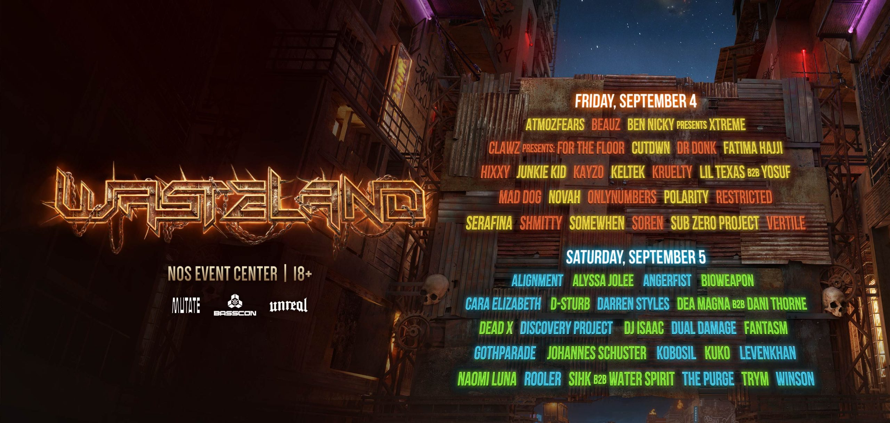

Uplcoming Events In SoCal

Basscon Wastelands is a music festival that features hardstyle music and is located at NOS in San Bernardino, CA.
This festival has a unique atmosphere and a great lineup of artists.
For more information, visit
https://www.wastelandfest.com/

Nocturnal Wonderland is a camping music festival held at the Glen Helen Regional Park in San Bernardino, CA.
That features a variety of electronic dance music genres represented throughout the event.
For more information, visit
https://www.nocturnalwonderland.com/

Dreamstate SoCal is a trance festival held at the Queen Mary in Long Beach, CA.
With beautiful waterfront views and a fantastic lineup of artists.
For more information, visit
https://www.dreamstate.com/